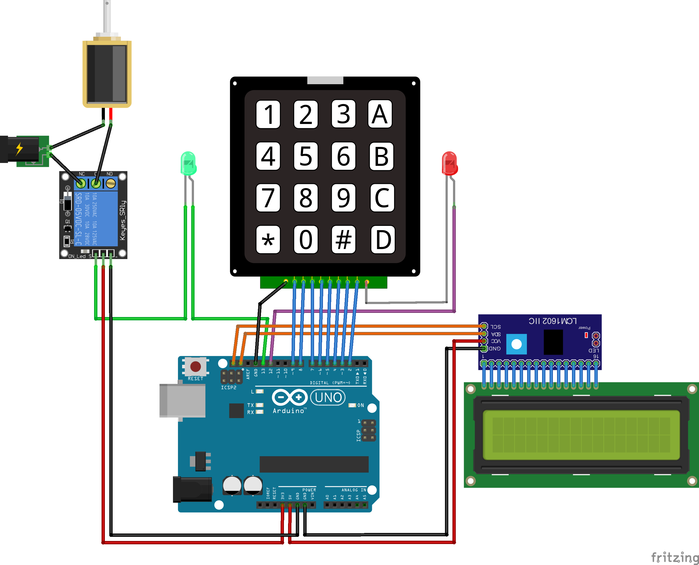

Des jeux et des énigmes "grandeur nature"
avec Raspberry Pi, Arduino et de l'électronique
Petite Intro...


Petite Intro...

http://www.brainrennes.com/
Petite Intro...

Le digicode

Le digicode
Cahier des charges
Les participants doivent trouver des indices composant un code permettant d'ouvrir une porte.
Le digicode
Réalisation - shopping list
- Une carte Arduino Uno - 7$
- Un keypad - 5$
- Un écran LCD 16x2 avec module i2c - 6$
- Un relais - 3$
- Une gâche électrique - 20$
- Une alim. 5v et une alim. 12v - 9$
- Une LED rouge et une LED verte - 0,02$
- Un joli boitier - 10$
Le digicode
Le digicode
Code source...
=> Démo
Le jeu d'échec

Le jeu d'échec
Cahier des charges
En réalisant une action sur un jeu d'échec, les participants obtiennent un code numérique.
Le jeu d'échec
Réalisation - shopping list
- 4 afficheurs 7 segments - 2$
- 1 résistance - 0,01$
- Des "Reed switchs" - 0,30$ pièce
- Des aimants - 0,40$ pièce
- Fil, plaque d'essai - 2$
Le jeu d'échec
Work in progress...

=> Capteur à effet hall
Le jeu d'échec
Vidéo
L'écran télécommandé

L'écran télécommandé
Cahier des charges
Une télécommande trouvée dans la pièce doit permettre le déclenchement d'une vidéo.
Une seconde télécommande doit permettre à l'équipe BRAIN de réinitialiser ou arrêter le système.
L'écran télécommandé
Réalisation - shopping list
- 1 Raspberry Pi 2, carte SD, boitier, alim - 60$
- 1 kit télécommande et récepteur IR - 3$
- 1 seconde télécommande avec 1 seul bouton - 2$
- 1 écran (tactile) - 200$
L'écran télécommandé

L'écran télécommandé
Gestion de l'infrarouge
- Utilisation de LIRC
- "Apprentissage" de la télécommande
- Mappage des touches sur des signaux LIRC
- Client Python connecté à LIRC
- http://www.modmypi.com/blog/raspberry-pis-remotes-ir-receivers
L'écran télécommandé
Affichage
- Page HTML5 contenant la vidéo (librairie Video.js)
- Première tentative : application Python avec Webkit embarqué
- Deuxième tentative : application Python avec lecteur media embarqué
- Troisième tentative : pilotage de Midori depuis Python
- ...
- Solution pragmatique (et moche) : lancement d'Epiphany, utilisation de xte et interception Javascript (shortcut.js)
L'écran télécommandé
Config LIRC
begin
button = KEY_S
prog = brain
config = play
end
begin
button = KEY_REFRESH
prog = brain
config = reload
end
begin
button = KEY_POWER
prog = brain
config = stop
end
L'écran télécommandé
Code source Python
import lirc
import subprocess
import time
def initir():
sockid = lirc.init("brain", blocking = False)
def launch_epi():
epiph = subprocess.Popen(["epiphany", "file:///home/pi/logo.html"])
time.sleep(10)
subprocess.Popen(["xte", "key F11"])
def loadvideo():
subprocess.Popen(["xte", "key j"])
def reload():
subprocess.Popen(["xte", "key r"])
def shutdown():
subprocess.Popen(["sudo", "halt", "-p"])
initir()
launch_epi()
while True:
codeIR = lirc.nextcode()
if codeIR:
if codeIR[0] == "play":
loadvideo()
if codeIR[0] == "reload":
reload()
if codeIR[0] == "stop":
shutdown()
L'écran télécommandé
Code source Javascript
L'écran télécommandé
=> Démo
Work in progress
- Compiler Webkit avec le support de l'accélération vidéo
- Amélioration du code Python
- Passage en mode "live system" : http://blog.pi3g.com/2014/04/make-raspbian-system-read-only/
Conclusion
- Plaisir d'interagir avec l'environnement physique
- Modification du "workspace", investissements
- Réviser l'électronique, les PIC, ...
- Pour aller plus loin : programmation de PIC en assembleur
- B.R.A.I.N., c'est cool !
Questions, améliorations, ...